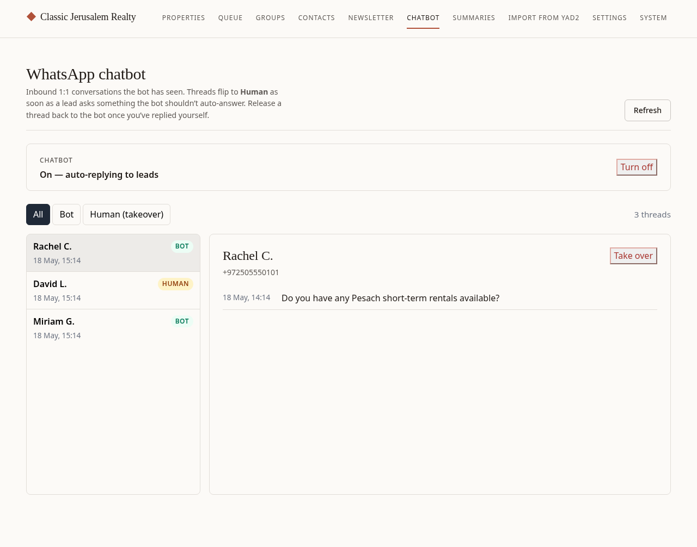

What the chatbot does
When someone messages your business WhatsApp number, the chatbot answers instantly — even at 2am. If they're looking for an apartment, it replies with a few matching listings from your database. If they ask something only you can answer, it politely says you'll get back to them and flags the chat for you.
- It qualifies cold leads for you so nobody waits hours for a first reply.
- It never pretends to be you on the hard stuff — pricing talks, viewings, neighborhood questions all come straight to you.
- You stay in control — turn it on or off any time, take over any conversation, and read a summary of every chat each morning.
Before you start
- Your new business phone number, with WhatsApp installed and activated on it. This is the number leads will message.
- Keep that phone charged and connected to the internet — the chatbot works through your WhatsApp on that phone, the same way "WhatsApp Web" on a computer does.
- Your admin login (the usual email + PIN).
Setup — do this once
Set up WhatsApp on the new number
Put the new SIM in the phone (or activate the eSIM), install WhatsApp, and register it with the new number. Add your business name and a logo as the profile so leads know it's you.
Open the Settings page in the admin
On your computer, sign in to the admin and open the Settings page. You'll see a WhatsApp section with a QR code (a square barcode), just like WhatsApp Web.

Scan the QR code with the new phone
On the new business phone, open WhatsApp and go to:
Settings → Linked Devices → Link a Device.
Point the phone's camera at the QR code on your computer screen. In a few seconds it links up.
Check that it connected
Open the System page. The WhatsApp card should turn green. Green means the system is linked to your WhatsApp and ready.

Turn the chatbot on
Open the Chatbot page and flip the big switch at the top to On. The bot starts off by default, so until you flip this switch it stays silent.

Set your greeting (optional)
On the same page you can edit the first message the bot sends to a new lead, in Hebrew and English. Keep it short and warm — for example, "Hi! Thanks for reaching out to Classic Jerusalem Realty. What are you looking for?" If you skip this, a sensible default is used.
That's the whole setup. From now on the bot answers your leads automatically.
Using it day to day
You mostly just let it run. Here's what happens and where you step in.
When a lead asks for an apartment
The bot reads what they want and replies with up to three matching listings — name, price, and a link — straight away. You don't have to do anything.
When a lead asks something only you can answer
Questions about price negotiation, viewings, what a neighborhood is like, pets, parking, contracts — the bot does not guess. It sends a polite "Shmuel will get back to you shortly" and flags the conversation for you. It then stays quiet in that chat so it never talks over you.
Taking over a conversation

- Flagged chats appear on the Chatbot page. Open one to read the whole conversation.
- Reply to the lead yourself (from your business WhatsApp, as normal).
- When you're done and happy for the bot to handle their next apartment search, click Release to bot. If you'd rather keep handling them personally, just leave it — the bot stays out of that chat.
Turning it off (Shabbat, holidays, vacation)
Go to the Chatbot page and flip the switch to Off. The bot stops replying immediately. Flip it back on when you're ready. Leads can still message you the whole time — you'll just answer them yourself, or the bot will catch up when you switch it back on.
Your morning summary email
Each morning around 8am you get one email recapping yesterday's chats: a short summary of each conversation, anything the lead asked you to follow up on, and any prices or dates they mentioned. It's the fastest way to see what needs your attention before you start the day.
If something doesn't work
- The QR code keeps expiring. Normal — refresh the Settings page and scan the new one quickly.
- The WhatsApp card on the System page is red. The link dropped, almost always because the business phone went offline. Make sure that phone is on, charged, and connected to wifi or data. If it stays red, re-scan the QR code from the Settings page.
- The bot isn't replying to anyone. Check two things: the switch on the Chatbot page is On, and the WhatsApp card on the System page is green. Both must be true.
- The bot replied to something it shouldn't have. Open the chat on the Chatbot page, take it over, and reply yourself. If it keeps happening, let me know and I'll adjust how it decides what to answer.